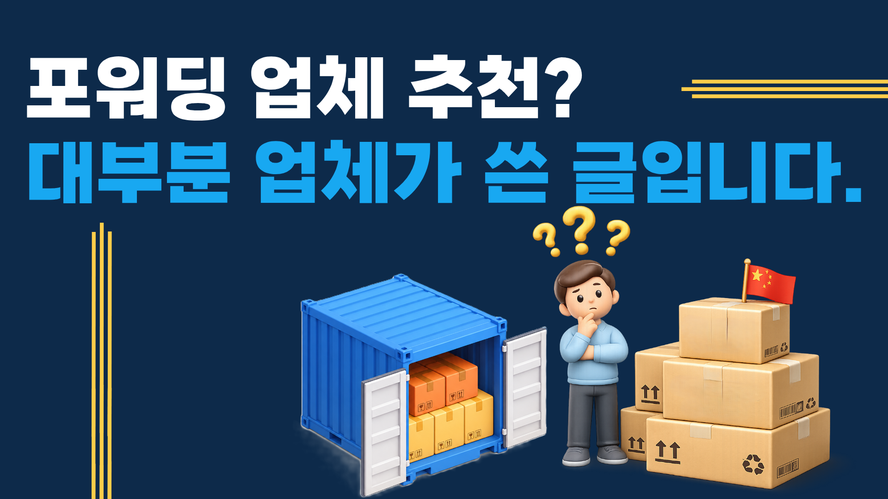

포워딩 업체 추천 글 대부분은 그 업체가 직접 쓴 글입니다
네이버에서 '중국 포워딩 업체 추천'을 검색하면 수십 개의 글이 나옵니다. 그런데 그 글 대부분은 포워딩 업체 운영자나 직원이 자사를 홍보하기 위해 직접 작성한 콘텐츠입니다. 객관적인 비교라고 보기 어렵습니다.
이 글은 투삼로지스가 실제 처리한 고객 화물 경험을 바탕으로, 좋은 포워딩 업체와 나쁜 업체를 구분하는 실질적인 기준을 정리한 것입니다. 저희 자신도 당연히 이 기준에 해당됩니다.
포워딩 업체를 고를 때 가장 많이 하는 실수
많은 분들이 운임 견적만 보고 업체를 선택합니다. 가장 싼 견적을 제시한 업체가 최종 청구서도 싸다는 보장은 없습니다. 실무에서 자주 발생하는 문제를 정리하면 아래와 같습니다.
| 흔한 실수 | 실제 결과 |
|---|---|
| 견적 가격만 보고 선택 | 도착 후 추가 비용 청구 (CFS비, 보관료, 서류비 등) |
| 현지 창고 운영 여부 미확인 | 중간 업체 마진 발생 → 비용 증가, 책임 불명확 |
| 통관 처리 능력 미확인 | HS코드 오류로 통관 지연, 추가 세금 발생 |
| 도착 후 대응 확인 안 함 | 수화인 문제, 창고 보관 초과 등 현지 해결 불가 |
중국 포워딩 업체, 이것 5가지만 확인하세요
① 중국 현지 창고를 직접 운영하는가?
중국 공장에서 화물을 픽업해 선적까지 처리하는 과정에서, 중간에 다른 업체를 끼는지 확인해야 합니다. 현지 창고를 직접 운영하는 업체는 화물 상태를 직접 확인하고, 마진 없이 운임을 책정합니다. 한국 사무소만 있고 현지는 협력사에 의존하는 구조라면, 문제가 생겼을 때 책임 소재가 불명확합니다.
② LCL 혼재 실적이 있는가?
FCL(컨테이너 전체)이 아닌 LCL(소량 혼재)을 직접 처리한 경험이 있는 업체인지 확인하세요. LCL은 여러 화주의 화물을 하나의 컨테이너에 합치는 과정(CFS 처리)이 필요해 노하우가 없으면 지연·손상이 발생합니다. 처리 경험이 없는 업체는 다른 포워더에게 재하청을 주는 경우가 많습니다.
③ 견적과 최종 청구 오차율이 0%인가?
좋은 포워딩 업체는 최초 견적과 최종 청구 금액이 동일합니다. 도착 후 갑자기 추가 비용을 청구하는 업체는 피해야 합니다. 상담 시 "견적 외 추가 비용이 발생하는 경우가 있나요?"라고 직접 물어보세요. 답변이 명확하지 않다면 신뢰하기 어렵습니다.
④ HS코드와 통관을 직접 처리하는가?
통관은 포워딩에서 가장 중요한 단계입니다. HS코드를 잘못 적용하면 관세가 과다 부과되거나 통관이 지연됩니다. 직접 통관 처리 능력이 없어서 관세사에 전적으로 의존하는 업체라면, 사전에 HS코드를 확인하고 최적 세율을 안내하는 서비스를 기대하기 어렵습니다.
⑤ 도착 후 현지 문제를 직접 해결하는가?
화물이 목적지에 도착한 뒤에도 문제가 생길 수 있습니다. 수화인 연락 불가, 창고 보관 기간 초과, 세관 추가 서류 요청 등이 대표적입니다. 한국에서만 응대하는 업체는 목적지 현지 문제를 해결할 수 없습니다. 현지 파트너와 직접 소통하면서 문제를 해결해주는지 확인하세요.
투삼로지스를 선택하는 이유
투삼로지스는 광저우·심천·이우 등 중국 주요 출발지의 현지 창고를 통해 화물을 직접 접수합니다. 견적과 실제 청구 오차율은 0%이며, 출발 전 HS코드 적용 세율을 사전 검토합니다. 화물 도착 후 현지에서 문제가 생기면 시차에 상관없이 직접 해결합니다.
LCL 1CBM부터 FCL 전체 컨테이너까지, 화물 크기와 품목에 따라 가장 유리한 방식을 먼저 안내드립니다. 공장 위치와 출발지, 도착지만 알려주시면 무료로 비교 견적을 드립니다.
자주 묻는 질문
- 중국 포워딩 업체는 어떻게 찾나요?
- 네이버 블로그, 무역 커뮤니티, 지인 소개 등으로 찾을 수 있습니다. 단, 추천 글의 대부분은 해당 업체가 작성한 홍보 콘텐츠입니다. LCL·FCL 처리 실적, 현지 창고 운영 여부, 견적 오차율로 비교하는 것이 중요합니다.
- 포워딩 업체 바꾸면 실제로 비용이 줄어드나요?
- 같은 노선·화물 기준으로 업체에 따라 CBM당 2만~5만 원 차이가 납니다. 현지 창고를 직접 운영하는 업체는 중간 비용 없이 운임이 낮게 책정되는 경우가 많습니다.